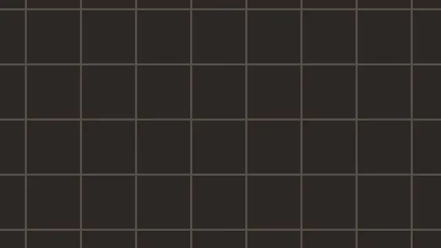

Pause-Knopf mit Dauer am Video
Ein stummer Film läuft als Schleife, links unten im Bild stehen zwei gleich hohe Knöpfe: Pause und der ganze Film mit seiner Dauer. Die Knöpfe tragen keine Signalfarbe. Bei reduzierter Bewegung steht ein Standbild, der Knopf heißt dann Abspielen.
Film im Einsatz
Der Film ist selbst erzeugt (Fliesenraster, 12 Sekunden, ohne Ton).
Unter dem Film steht, was er zeigt. Der Film trägt keine Aussage, die nur im Film steht.
Zustände
Ruhe, Zeiger darüber, Tastaturfokus, gedrückt; darunter der Knopf, wenn der Film steht.
Reduzierte Bewegung
Kein Start, das Standbild aus dem poster-Attribut steht. Abspielen startet den Film erst auf Wunsch.
